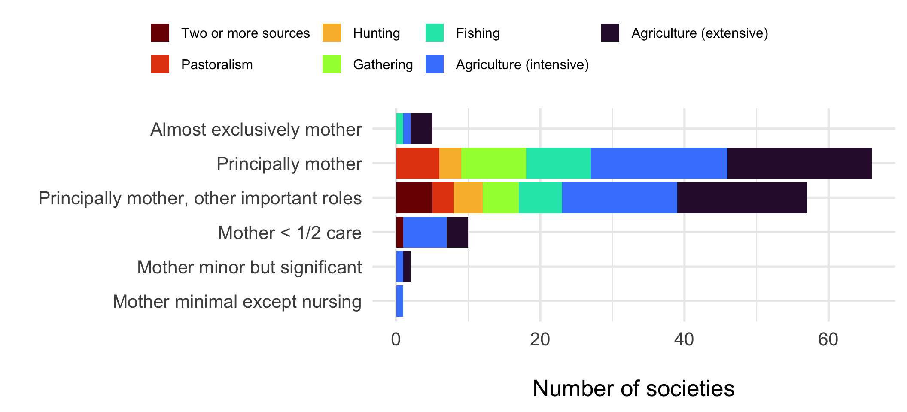
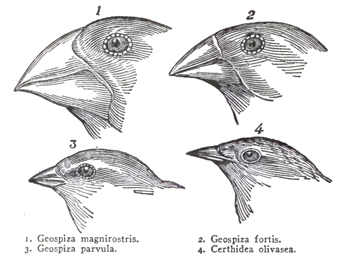
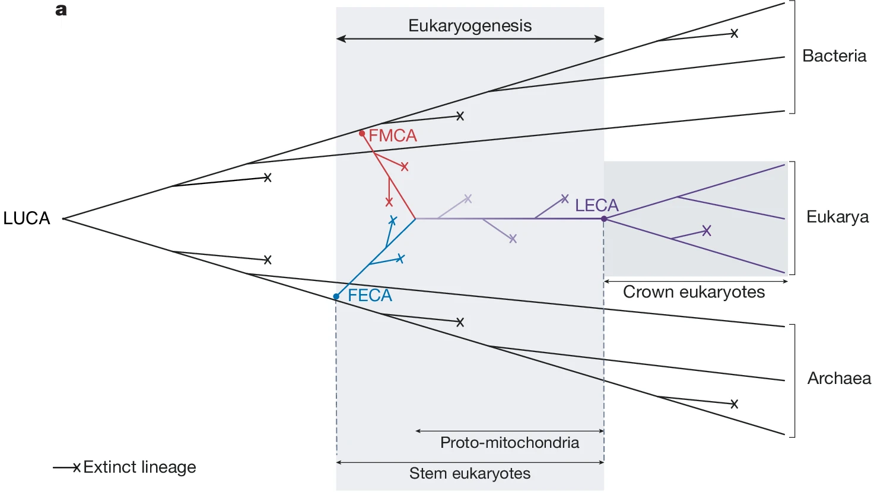
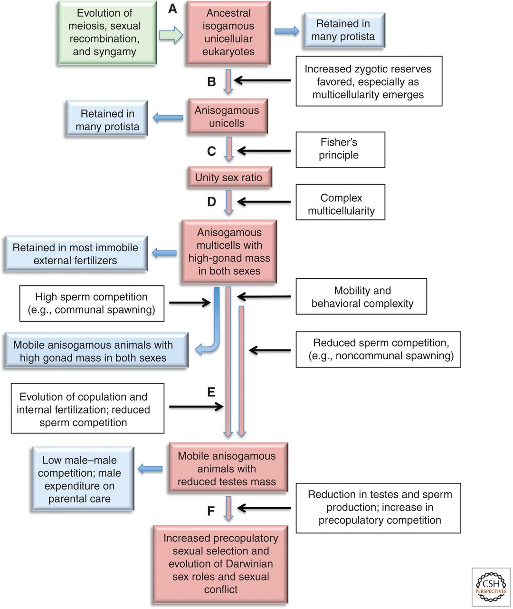
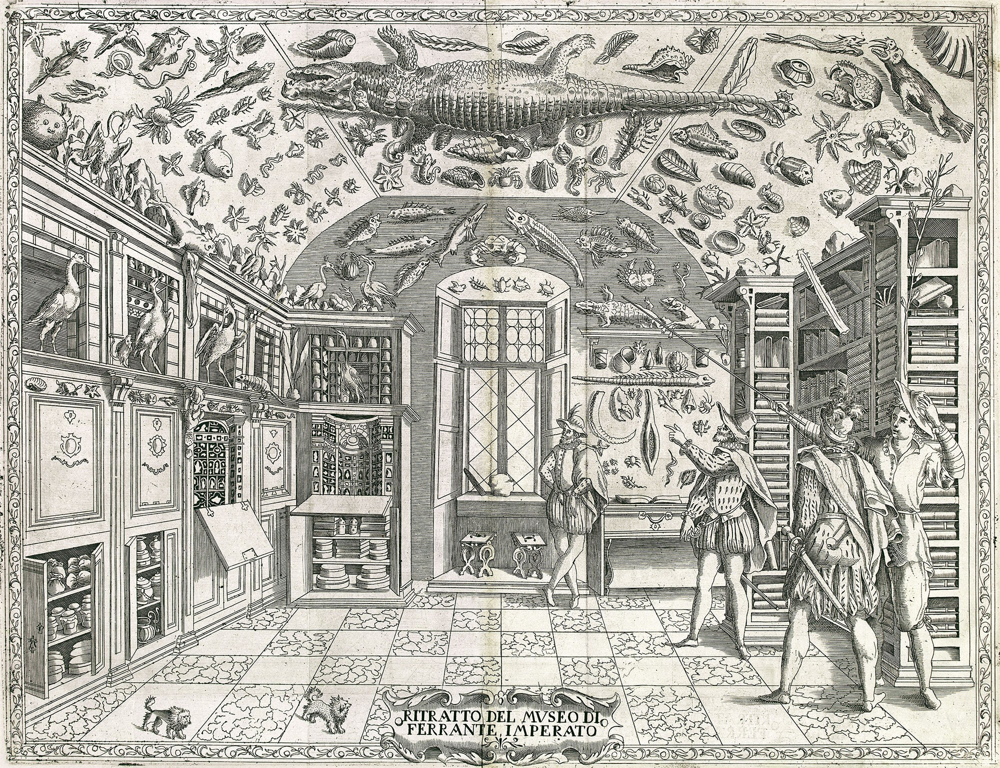
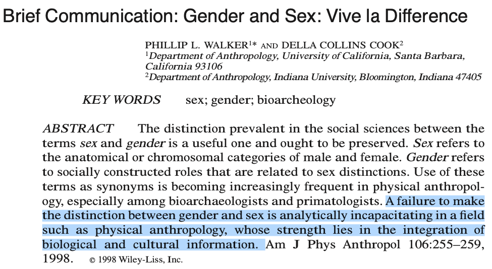
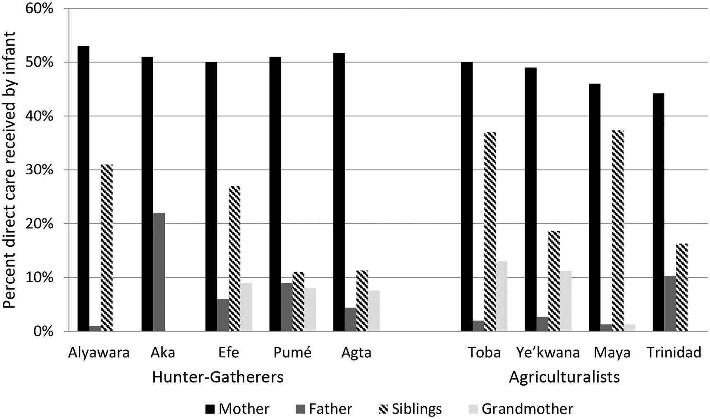
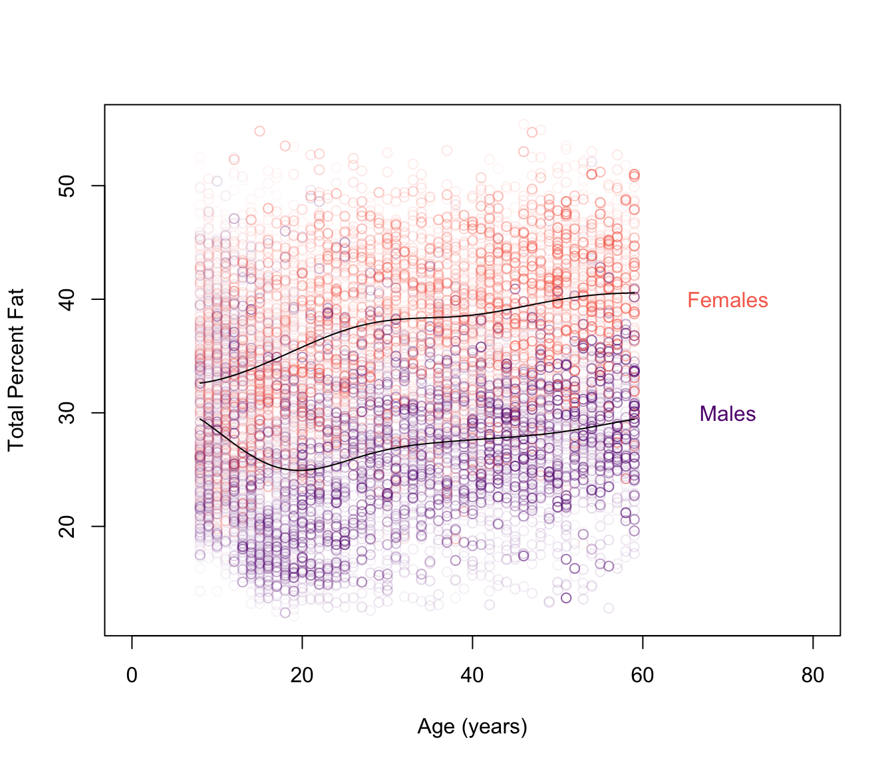
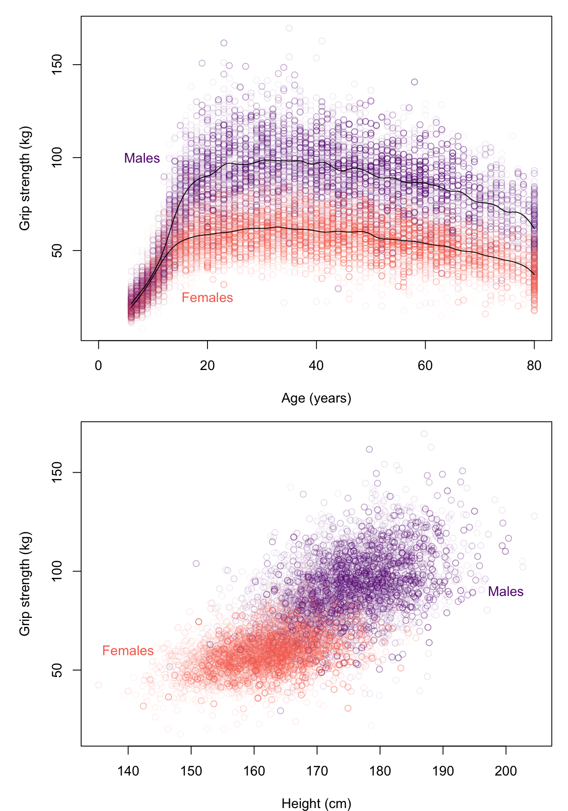
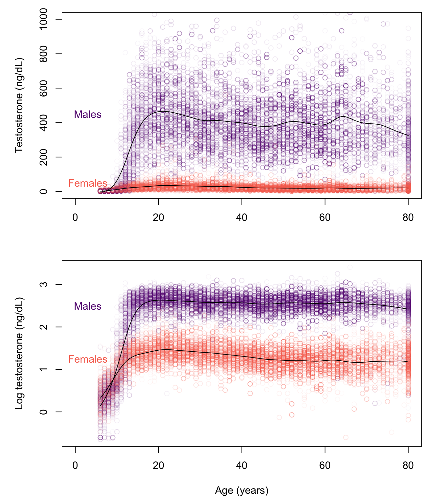

Sex Is a Spectrum offers a bold new paradigm for understanding the biology of sex….
- Marketing blurb on Amazon.com
Even as he voyaged on the Beagle, Darwin’s social profile was rising. Letters he sent home were read at scientific societies in London, as were parts of his journal, and a prominent geologist gushed that “he will have a great name among the Naturalists of Europe.” Darwin’s accounts of his voyage, published a few years after his return, further bolstered his reputation. Books on travel and exploration were popular at the time, and Darwin was apparently a fan, bringing several with him on his five year expedition (Tallmadge 1980). Darwin’s The Voyage of the Beagle, framed as a journey from the known to the unknown to bring back new knowledge, was very well received.
Darwin could have doubled down on his growing reputation as an explorer-scientist, giving talks and writing books on strange new worlds and the incredible diversity of the animals and peoples inhabiting them. Instead, pursuing a hint he dropped in The Voyage (see Figure 1), he sought the causal principles underlying this diversity, giving us two: natural selection and its important variant, sexual selection. These two principles go a long way toward explaining the diversity of all life on earth.

Agustín Fuentes, an anthropologist at Princeton, whose previous book was Race, monogamy, and other lies they told you: Busting myths about human nature, opens his new book, Sex is a Spectrum (hereafter, SIAS), with a description of the strange physiology of the bluehead wrasse, a sequential hermaphrodite:
Imagine you are a fish called the bluehead wrasse, living off the coast of Florida. As you grow up, you, just like all to the other bluehead wrasse your age and size, develop one set of reproductive organs. You are what we’d call female, so you produce eggs. There is only one very large member of your group, and they are the group male, so produce sperm. But over the next few weeks you grow really fast, becoming the second-largest fish on your reef. Then the male gets eaten. Almost immediately your body starts to change, your reproductive organs mold, shift, and alter their form. You become the group’s sperm producer. As a bluehead wrasse, you can have one body and one set of DNA, but multiple forms of reproductive biology across your lifetime.
What Fuentes fails to provide is any explanation, other than a vaguely group-functional need to “become the group’s sperm producer,” for why many wrasse and other teleost fish species are sequential or simultaneous hermaphrodites. He could have looked up the literature on this as easily as I did (e.g., Avise and Mank 2009), and maybe he did, but if he did, he chose not to tell his readers.
And that’s the pattern Fuentes follows in SIAS, which is long on descriptions of biological variation but very short on explanations, either those put forward in the scientific literature, or his own. Yet his Introduction promises, at least for humans, to deliver a “new narrative” about the biology of sex:
We have to understand what it means that everything about humans is a supercomplicated blend of biology and culture. We need to combine our knowledge of biology, sex, and the human experience into a new narrative. My goal in this book is to put forward this new narrative and show how the biology of sex actually works, what it does and does not tell us, and how we might incorporate this knowledge into our education, lives, and laws. (p. 3).
The tl;dr of my review is that he doesn’t deliver a new narrative, nor any theoretical or conceptual insights or advances beyond “everything about humans is a supercomplicated blend of biology and culture.”
Preface: Theoretical background
To assess whether Fuentes identifies important biological limits of the sex binary, as his title promises, I’ve written this somewhat lengthy preface to explain (1) why most evolutionary biologists define the sexes as anisogamy, (2) the current thinking about how anisogamy might have evolved, and (3) the implications for the evolution of anisogamous species. In other words, what would science be giving up if it ditched the binary sex concept? You can skip this background material and go directly to my review by clicking here: Section 2. Caveat emptor: I am a consumer of this literature, not a producer, and I don’t specialize in the evolution of sex or anisogamy.
The Earth formed about 4.5 billion years ago, and, based on fossil evidence, life arose by 3.7 billion years ago, and perhaps much earlier. One genetics-based estimate inferred that the last universal common ancestor (LUCA) of all life was similar to modern-day prokaryotes and had evolved by 4.2 billion years ago (Moody et al. 2024). LUCA subsequently gave rise to the two top-level domains of life, the single-celled Archaea and Bacteria.
The evolution of sex commenced with the later evolution of eukaryotes, which have a more complex cellular structure. Eukaryotes were traditionally considered one of the three top-level domains of all life, but are now believed to have evolved from Archaea and then subsequently evolved a symbiosis with a bacterium (the origin of mitochondria), some 1.8-2.7 billion years ago (Vosseberg et al. 2024). See Figure 2.

The eukaryotes include all multicellular plants, animals, and fungi, but most eukaryotic species are protists – a diverse group of single-celled organisms (Burki et al. 2020).
Whereas Archaea and Bacteria reproduce clonally via cell division, almost all eukaryotes, including single-cell protists, reproduce sexually, at least some of the time. This apparently included the last eukaryotic common ancestor (LECA), meaning that sex is ancestral in the eukaryotes (Speijer, Lukeš, and Eliáš 2015). Sexual reproduction is defined as the meiotic formation of haploid reproductive cells (gametes), where a gamete from one individual fuses with a gamete from (typically) another individual (the two parents) to form a diploid cell (the zygote, i.e., offspring).1
Note that two parents play a central role in sex, as this is the ultimate reason there are two sexes in many species. Note also that sex is largely conserved through deep time – perhaps a billion years or more – and across millions of eukaryotic species, including humans. The theoretical scope of sex and its related concepts is vast.
There is no consensus on why sex evolved or has been maintained by selection across such a diverse range of species. Fuentes provides a brief account of one of the influential theories, but there are many others. This Wikipedia article provides an overview.
Sexual reproduction does not necessarily involve females and males. Before discussing the evolution of the two sexes, I need to introduce the concept of a “game” from game theory. A game comprises one or more players, their possible moves (also often termed options, choices, alternatives, or actions) at each of a number of stages, the information they have at each stage, and the payoffs for each player for each path through the game. Here is the extensive form of the ultimatum game, which will probably be familiar to most of my readers:
The point that will be important shortly is that there is a key distinction between the players, and their options in the game. In general, the possible options for players can be continuous, as for player 1 in the ultimatum game, or discrete (binary, for example), as for player 2. A strategy is a specification of the move a player will make at each stage given the information she has at that stage. Strategies thus map information to actions. A key focus of game theory is to determine the optimal strategies for all players, i.e., the strategies that will maximize their payoffs given the strategies of the other players. (As an aside, the “solution” to the ultimatum game in Figure 3 is that player 1 should make the smallest positive offer ($0.01), and player 2 should accept it because these strategies maximize the payoff for each player, given the strategy of the other player.)
In evolutionary game theory, one of the most popular frameworks for theorizing about organism traits, a game represents a situation faced by individuals in a population who can respond in different ways, where the payoff is fitness (reproductive success). Mathematical analysis of the game aims to determine the strategies that will evolve by natural selection. The game concept can be applied not only to the evolution of behavioral traits but also to the evolution of physiological and morphological traits, such as gamete type and gamete size.
To reproduce sexually, a eukaryotic organism must produce a gamete – a cell containing half the number of chromosomes of the somatic cell2 – which must then encounter and fuse with a gamete from (typically) another member of its species (the two parents) to form a zygote (the offspring).3
In most species, gametes have “types”, and only fuse with gametes of a different “type” (termed mating types).4 In evolutionary game theory terms, producing gametes is a “game”, the players are the two parents, gamete “type” is a “choice” that each parent must make, and the number of mating type “choices” is determined by, e.g., the number of alleles at one or more mating type loci, with new options introduced by mutations. The number of mating types is typically two, but in some species ranges into the thousands. The evolution of mating types is still a matter of debate (for one recent account, see Constable and Kokko 2018).
Gamete size is another critical “choice” in the gamete production game that each parent must make. Gametes must survive long enough to encounter and fuse with another gamete, and the resulting zygote must be able to successfully survive and reproduce, all of which require sufficient provisions from the parents. Organisms could, in principle, choose to produce gametes that are all the same size (termed isogamy), gametes that have a continuous spectrum of sizes, or gametes that have a discrete number of sizes, such as two: large and small (termed anisogamy). A general pattern (albeit one with several exceptions) is that single-celled eukaryotes are isogamous with two mating types, whereas multicellular eukaryotes are anisogamous, producing either small gametes that only fuse with large ones, or large ones that only fuse with small ones. The latter is the biological definition of the sexes: small gametes are by definition male, and large ones female.
I want to draw out an implication that I think is not as widely recognized as it should be: in its most general form, which is meant to apply to the evolution of millions of multicellular species over deep time, the sex “binary” is not a scheme to classify the two parents (the two “players”). Instead, it refers to the number of options for each parent in their gamete production game. In isogamous species, each parent produces gametes of the same size, i.e., each has only one gamete size option (no binary). Many species (mostly but not exclusively plants) are simultaneous hermaphrodites. In these species, each parent produces both large and small gametes. Hence, the parents cannot be classified as either male or female, but their gamete size options can be. In sequential hermaphrodites, such as the bluehead wrasse and many other fish species, parents produce one gamete size (typically the large one), and then some undergo substantial physiological changes to produce the other size. In yet other species, including humans, the gamete production game still has two options (large and small), but the “choice” is made early in development via a genetic or environmental randomization device (in humans, the 50% probability of inheriting an X or Y chromosome from the father), committing each parent to produce either large gametes or small ones, but not both (termed gonochorism).
Importantly, gamete production is not the only game in town. Organisms have evolved to play many “games,” such as territorial defense, predation, predator evasion, parasitism, parasite defense, and so forth. This means that although gamete production will have an important impact on the evolution of the phenotype (including the behavioral phenotype), many other factors will too.
Turning back to the two sexes and their evolution: given that organisms could, in principle, produce gametes with a continuum of sizes, a key question in evolutionary biology is why most multicellular organisms only have two options: large and small. One of the most influential evolutionary game theoretic accounts of the evolution of anisogamy assumes that producing gametes consumes limited resources, so sexually reproducing organisms have a choice between producing fewer large gametes or more small ones. Bulmer and Parker (2002) explain:
Parker et al. (1972) proposed that males and females originated through disruptive selection acting on an ancestral isogamous (i.e. single sex) population. This arises from three very simple assumptions as follows.
- In a primitive marine ancestor, individuals produce a range of gamete sizes, and fusion between pairs of gametes is at random in the sea.
- Each parent has a fixed budget for reproduction, so that there is a size-number trade-off: the number of gametes produced is inversely proportional to their size.
- The success (e.g. viability) of the zygote increases with its size, or provisioning, which equals the sum of the sizes of the two fusing gametes.
In this model, the most frequent fusions would be between the smallest (S) gametes, but the resulting zygotes would experience low viability compared with zygotes arising from the fusion of large gametes (O). Thus, S-producers succeed by gaining most fusions with O gametes, and O-producers succeed because they generate zygotes with high viability, having more energy for development. Individuals producing intermediate-sized gametes (I), though originally commonest, decrease in frequency relative to S- and O-producers, resulting in a population consisting of proto-males and proto-females.
Note that in this scenario, the gamete size options were initially a continuum, and then, perhaps coincident with the evolution of multicellularity, evolved to be discrete (binary).
The evolution of anisogamy had many evolutionary consequences, not least of which was sexual selection. Here is one scenario from Parker (2014), which he terms the “sexual cascade”:

So far, I’ve discussed steps A and B in Figure 4. Step C, known as the Fisher condition, is critical to understanding why the ratio of females to males is close to 1:1 (unity) in many species, including humans, but can deviate from 1:1 in others, a topic investigated in sex allocation theory (Frank 1990). Understanding and measuring sex ratios is key for the conservation of endangered species.
With the evolution of multicellularity in step D, organisms invest in specialized gonadal tissues, with consequent high levels of sperm competition in some species with, e.g., communal spawning, but reduced sperm competition others with noncommunal spawning. In step E, copulation evolves in some species, which reduces sperm competition but increases precopulatory (mating) competition and sexual selection, and the evolution of Darwinian sex roles. See Parker (2014) for details.
The take-homes from this preface are:
- The sex binary (anisogamy) characterizes the evolution of millions of species across deep time.
- The sex binary refers to the number of options in the gamete production “game”, not necessarily to the number of parent “types”. In gonochoric species, including humans, the number of options and number of parent types are the same (two), if by parent “types” we mean types that evolved by natural selection to produce one gamete size or the other.
- The evolution of anisogamy has had many profound downstream consequences for the evolution of the biodiversity we see today, and is an essential concept in conservation efforts.
- Abandoning the binary sex concept without a clearly superior alternative would kneecap our ability to understand an important fraction of life on earth, including Homo sapiens.
Back to my review…
Remarkably for a book on the biology of sex written for a general audience, with the word “binary” in the title, Fuentes does not provide his readers with the Parker et al. theory, or any other theory for the evolution of binary sex, i.e., anisogamy.5 Instead, he summarizes historian Thomas Laqueur’s (1990) influential account of Western ideas about the sexes, the one-sex, two-sex model:
The idea of biologically distinct sexes only became common in the eighteenth century. From the early Greek ideas about sex of Aristotle and Hippocrates and the Roman anatomical ideas of Galen through the Renaissance, and into the start of the eighteenth century, science and the medical world did not consider females and males as two separate kinds of biologies or beings. Rather, they were seen as hierarchically ranked (male above female) versions of the human form. This was termed the “one sex model.”8 But from the eighteenth into the nineteenth century, the belief in a “two sex” model, with males and females reflecting different biologies, emerged, but it had no specific definitional focus. It is from this newer two-sex worldview that the hypothesis of differences in gamete size as the key to female and male distinction emerged. (SIAS, p. 9).
Laqueur’s model, detailed in his book Making Sex: Body and Gender from the Greeks to Freud, is based in part on Galen’s claim that “all the parts, then, that men have, women have too, the difference between them lying in only one thing… , namely, that in women the parts are within [the body], whereas in men they are outside….”6.
I checked Wikipedia to see if there were any criticisms of Laqueur’s model and indeed there are. A few more minutes of googling turned up The Myth of the “One-Sex” Body by the Harvard historian of science, Katharine Park, which struck me (admittedly not an historian) as a convincing take-down of Laqueur’s one-sex model (Park 2023). This particular criticism, one of many, stood out for me:
While immersed in Galenic medical theory, [Al-Raz̄ı̄a and al-Majus̄ı̄w] were closely attuned to the realities of their patients’ bodies, including differences between the illnesses suffered by their male and female clients, alongside which qualified anatomical similarities between the male and female genitals paled in importance. Because men neither menstruated, miscarried, nor gave birth, the main pathological conditions related to these functions were unique to women, including hypermenorrhea and amenorrhea, obstetrical fistula, vaginal and perineal tears, and uterine prolapse.34 While it was theoretically possible to shoehorn these conditions into a system shaped by strict parallels between the male and female genitals, the stark differences between the illnesses associated with each set of structures muted their similarities. It is hard to imagine any context in which a homology between the scrotum and the uterus could prove helpful for the treatment of either organ. (Park 2023, 161)
Although Park credits Laqueur for opening up an important topic in the history of early medicine, her conclusion doesn’t pull any punches:
Laqueur’s account of the “one-sex” body is an attractive fiction, as well as a good example of the inadvisability of making sweeping statements about textual traditions in languages one cannot read. (Park 2023, 176)
The long Western history of pre-Darwinian ideas about the sexes is obviously important and complex, but in the end Fuentes does not dispute the role of anisogamy. In fact, for much of his book instead of using the terms “female” and “male” he uses “large-gamete producers” and “small-gamete producers” (later he switches to “3G females” and “3G males”, where the “3G” refers to genes, gonads, and genitals).
Fuentes next discusses the Darwin-Bateman paradigm:
Bateman’s [1948] argument (cheap sperm and costly ova make males and females very different organisms) became baseline theory for evolutionary biology around 1966 and centralized in the world of assumed “biological fact” by another biologist, R. L. Trivers, in 1972.13 Trivers connected anisogamy to parental care via a simple mathematical equation. Bateman’s notions of sex differences entered near universal “truth” in biology with the work of E. O. Wilson in 1975 and G. A. Parker in 1979.14 As it turns out, Bateman was mostly wrong. (p. 10).
Was Bateman mostly wrong? The modern version of Bateman’s argument is known as a Bateman gradient, which is the slope of reproductive success on the number of mates. The Bateman gradient is a key component of the strength of sexual selection and is typically expected to be steeper in males than females. Why? Bateman linked the purported sex difference in the gradient to anisogamy: males produce many small gametes, and females fewer large ones. To give an extreme example: if, due to resource constraints, each female produced one large gamete in her lifetime, and each male produced 10 small ones, then a female could only have one offspring if she can acquire at least one mate, whereas a male could potentially have 10 offspring if he were able to acquire 10 mates. In addition, if the sex ratio is 1:1, then if some males have more than 1 mate, on average, others have less, on average, which would increase the variance in male relative to female reproductive success (e.g., some males have 10 offspring and others 0, whereas all females have 1 offspring), sexually selecting for whatever traits increased males’ access to mates.
Does this verbal argument hold up to mathematical and empirical scrutiny? Mathematically, Lehtonen (2022) found that it does:
The first two [mathematical] models confirm that gamete number asymmetry alone creates asymmetry in Bateman gradients as Bateman’s assertion suggests, while the third model demonstrates that if fertilisation is efficient, this outcome remains valid despite the asymmetric roles of female as gamete recipient and male as gamete donor. However, inefficient fertilisation can push Bateman gradients towards equality under external fertilisation and reverse them under internal fertilisation. Overall, the results show that despite interesting exceptions, Bateman’s assertion is correct under relatively general conditions.
Empirically, Bateman’s original 1948 experiment with fruit flies had problems, as Fuentes points out, and a previous replication attempt failed to support Bateman’s hypothesis. However, a recent replication of Bateman’s experiment, modified to address the original problems (Davies, Janicke, and Morrow 2023), supported Bateman:
(a) males had significantly more variation in number of mates compared with females and (b) males had significantly more individual variation in total number of offspring. We also find a significantly steeper Bateman gradient for males compared to females, suggesting that sexual selection is operating more intensely in males. However, female remating was limited, providing the opportunity for future study to further explore female reproductive success in correlation with higher levels of remating.
Moreover, in a meta-analysis of 72 studies of 66 species titled “Darwinian sex roles confirmed across the animal kingdom”, Janicke et al. (2016) found that:
across the animal kingdom, sexual selection, as captured by standard Bateman metrics, is indeed stronger in males than in females and that it is evolutionarily tied to sex biases in parental care and sexual dimorphism. Our findings provide the first comprehensive evidence that Darwin’s concept of conventional sex roles is accurate and refute recent criticism of sexual selection theory.
Fuentes cites this study, curiously not in his discussion of Bateman but in a subsequent chapter in support of this statement:
Large- and small-gamete producers can and do experience different evolutionary pressures resulting in some sexual selection for sex-biology “roles.” But any one pattern, even if it’s very common, is seldom ubiquitous, and the actual biological outcomes—what the “roles” and bodies look like and do—vary substantially across different species and lineages. (SIAS, p. 23).
The above quote illustrates Fuentes’ rhetorical tactic throughout SIAS: a begrudging yes, there are some evolved sex differences in trait XYZ, but it varies!
Fuentes has promised the reader a “new narrative” about the biology of sex, which suggests new theories and new explanations for biological variation that surpass existing ones, yet the book is mostly brief examples of biological variation in humans and other animals that are only very rarely accompanied by explanations by Fuentes or anyone else. Readers who are familiar with the examples will know that some have widely accepted explanations, some have hotly debated explanations, and some have highly speculative explanations. But unless they track down the cited references, the general target audience for this book won’t have an inkling that any explanations for this variation exist at all.
Chapter 2 Animal Sex Biology: Mixing it up
In his chapter on animal sex biology, Fuentes briefly describes the hymenopteran haplodiploid system, insect sex determination systems, hermaphroditic and parthenogenic earthworms, C. elegans sex determination, sequentially hermaphroditic teleost fishes, female mimics, and sex changes in a variety of other fish species, yet despite a rich theoretical and empirical literature on all of these, he provides no explanations for any of them. But he does (finally!) provide one short possible explanation for gobies. Here it is in its entirety:
The ability to shift sex biology flexibly by all individuals in a population reduces the costs and risks incurred by moving between the coral clusters where the gobies like to live. (SIAS, p. 28).
Turning to reptiles, birds, and mammals, species with internal fertilization, Fuentes informs us:
It is in these birds, reptiles, and especially mammals, where one sees, on average, greater physiological differences between the sex biologies of large- and small-gamete producers. However, what those patterns are across and within species, what is “typical” for any given reproductive physiology, and how much overlap exists between the bodies and behavior of large- and small-gamete producers within a given species vary quite a lot. (p. 28).
Fuentes provides brief descriptions of temperature-dependent sex determination, with no explanations, and sexual body dimorphism, where he briefly explains in one sentence that the latter might be due to sexual selection and environmental constraints on body size. He devotes a paragraph to the interesting genetic system of parthenogenic whiptail lizards, but with no explanations, and notes that most reptiles provide little parental investment beyond provisioning eggs; again, no explanations.
For variation in biparental care in birds, Fuentes suggests a few factors that might explain it in one sentence, but without providing any actual explanations:
While most birds have biparental care of young, the details of that caregiving vary widely. How large- and small-gamete producers contribute to such care is related to differences in social systems, mating systems, environmental context, and bodies.22 (p. 30)
Curious readers will have to look to reference 22. The same goes for sexual dimorphism:
In many bird species, there is sexual dimorphism (differences in the shapes, sizes, and/or colors of bodies) between large- and small-gamete producers, but what form that takes is not consistent or in a single pattern across all species. Body-size differences between large- and small-gamete producers often relate to aspects of social and mating systems, to the patterns of parental care, and to aspects of the specific ecologies of that species. (pp. 30-31)
Relate how? Fuentes provides no clue.
The mammal examples are the spotted hyena pseudopenis, with no explanations except that it is “mediated by a very complex interplay between a range of multiple hormones” (p. 33); and monogamous primates and naked mole rats, with no explanations.
For Fuentes, it seems, biology is merely a cabinet of curiosities:

To be clear, existing explanations for most of Fuentes’ examples are still debated, sometimes heavily, yet the point of studying biological variation is to propose and test explanations.7 Fuentes’ “new narrative” has provided nothing except well-known examples of biological variation minus possible explanations for that variation that have been put forward by others, nor does he provide any explanations of his own.
Chapters 3-7: Humans are Messy [etc.]
Fuentes kicks off his discussion of humans, the focus of the rest of his book, with the case of a Copper Age skeleton incorrectly sexed as male due to cultural bias, a reprise of Laqueur’s questionable history of Western sex concepts, and a quote from a paper by McLaughlin et al. (2023):
The best current data and analyses produce a contemporary understanding that a “reliance on strict binary categories of sex fails to accurately capture the diverse and nuanced nature of sex.3” (p. 40).
I went through the McLaughlin et al. (2023) paper a year ago, and despite their intent, the authors actually reinforces the case for binary biological sex:
- According to some, this article provides strong empirical evidence for nonbinary biological sex, so I took a look.
tl;dr: ironically, the article reinforces the case for binary biological sex. 🧵https://t.co/7hpZyg7zNf — Ed Hagen ((ed_hagen?)) April 9, 2024
Fuentes’ central theme is that “humans are biocultural”:
Although we are biological organisms, the totality of the human experience cannot be reduced to either specific innate (biological) or external (environmental/cultural) influences. It is a synthesis of both: humans are biocultural. (p. 41)
For Fuentes, a biocultural account of gender and sex requires deliberately conflating these distinct concepts as “gender/sex” to “reflect the intertwined biocultural reality of bodies and experiences more accurately. (p. 45)” Biological anthropologists Phil Walker and Della Cook (1998) critique this approach better than I could:

The importance of distinguishing between gender and sex is nicely illustrated by the Copper Age skeleton whose biological sex and elaborate burial did not align with contemporary conceptions of gender roles.
Fuentes then presents a fairly standard account of human evolution since our divergence from chimpanzees in which he rightly emphasizes the importance of cooperative child rearing (alloparenting). Evidence for this comes from work with contemporary hunter-gatherer and other groups, which also typically exhibit marked sexual divisions of labor. Although Fuentes briefly mentions sexual divisions of labor, he downplays it:
In some contemporary human societies, men (the gender) do hunt large game more than women (the gender), and in many societies, mothers, grandmothers, and sisters are the main individuals charged with childcare. However, assumptions about such role differentiation and its patterns in the human past, especially in the context of hunting and caretaking, are challenged via a range of archeological, fossil, and recent ethnographic analyses. (p. 70).
One of the papers he cites that supposedly challenges a sexual division of labor in the human past is Kuhn and Stiner (2006), who argue that, due to its fitness advantages, it was precisely the sexual division of labor in human populations expanding out of tropical Africa that might explain why they replaced Neanderthals. Another paper Fuentes cites here, Anderson et al. (2023), had fatal flaws in its data collection and analysis (Venkataraman et al. 2024).
Fuentes also doesn’t cite the hugely influential work of Hillard Kaplan and colleagues that emphasizes the importance of a sexual division of labor in human evolution (e.g., Kaplan et al. 2000; Kaplan, Hooper, and Gurven 2009). Their basic idea is that, whereas ape mothers provide all the calories for their infants, who are able to provision themselves on plant foods in just a few years, human mothers invest heavily in child care and foraging for plant foods and small game that are reliable but lower return, and men forage for high risk, high return game, producing a surplus, and the combined calories provision multiple offspring who take the better part of two decades to acquire these complex foraging skills. In short, it was the sexual division of labor that underpinned the “cultural” part of our biocultural species.
Here is my plot of data from a recent Science paper by Kraft et al. (2021) that presents evidence for the foregoing scenario (also not cited by Fuentes). Note that women generally provide enough calories to support themselves (with exceptions) and men produce a surplus (with exceptions):

And here are data supporting the importance of allocare in hunter-gatherers and other traditional societies, but which also show that mothers do by far the most infant care, usually followed by older siblings:

It’s not that Fuentes gets anything horribly wrong in his chapters on humans, past and present, it’s that he fails to provide any, and I mean any, alternative to the standard view that binary sex is but one contributor to variation in phenotypes.
To give an example, here is Fuentes discussing the sex difference in human height:
Height in humans is not a sex binary and not a true dimorphism. Height is one morph (a measurable shape) with a range of variation that can be divided into overlapping clusters composed of 3G males and 3G females. But it does not automatically have to be divided that way. Height distribution can also be sorted by age, by people from different latitudes and dietary practices, by athletes versus non-athletes, and by a range of other variables depending on what questions you are asking. There are not two forms of human, a tall and a short version; rather, there is a range of variation with some patterns in that variation. (p. 74).
The fact that binary sex only explains some of the variation in height and other traits in humans and other species, but not all, is entirely expected. This no reason to abandon the binary sex concept – recall from my preface that species have been playing many “games” over the course of their evolution, all of which have had an impact on their phenotypes. Accounting for the impact of multiple factors on some trait, including factors like nutrition that operate during development, is bog-standard life science.
Fuentes does acknowledge that there are some dramatic evolved sex differences, such as the presence or absence of a uterus. He also acknowledges sex differences in body composition, such as in body fat and upper body strength:
The pattern of fat deposition is the same for 3G sexes until puberty, when 3G females usually begin to increase total fat mass, eventually developing about 10 percent more total fat, on average, than a 3G male of the same height and weight. (p. 87).
[It] is not totally clear what role size difference as a category is playing relative to 3G sex as category of comparison…But some patterns of between 3G category measured strength still exist, to some degree, when comparisons are made between same height and weight 3G-female and 3G-male individuals. (pp. 81-82)
Sex differences in body composition (amounts and distributions of fat and muscle mass) provide a strong clue that women and men were engaged in different activities over the course of human evolution (on average!). Fuentes draws on NHANES data, so I will too. Regarding percent body fat, there is an increase in females after puberty, as Fuentes notes, and a decrease in males. See Figure 8.

Regarding upper body strength, there is a bit more than “some degree” of sex difference, even when accounting for sex differences in height, which I’ve done here by plotting the two against each other (and it’s possible that sex differences in height and upper body strength evolved together). See Figure 9.

The proximate cause of the sex difference in strength is likely the pubertal surge in testosterone levels in males relative to females (but in adults, variation in strength is mostly unrelated to variation in testosterone):

Readers can judge for themselves if the evidence warrants a possible evolutionary explanation for the sex differences in body composition, but if so, what is it? Fuentes dismisses the work of Lassek and Gaulin (2009, 2022), who argue that these are explained by sexual selection on males and natural selection on females:
[S]ome researchers assert that “sex differences in muscle and strength are largely the result of sexual selection for male-male competitive traits, whereas females have increased body fat (in place of muscle) due to natural selection for maternal investment capacity in the context of our unusually large brains.”5….Chapters 4 and 5 outlined why these assumptions don’t map onto what we know about human evolution and how they oversimplify descriptions of the existing variation in human biology.
So, as we see, there are scholars who argue that human 3G-category bodies and minds are deeply and evolutionarily different and that this “biological reality” places human men and women in direct conflict. And there is a large swath of the public that believes this as well. However, scientific data and analyses demonstrate that this sex-conflict position is not true. (SIAS, p. 110-111).
Lassek and Gaulin actually argue that men were in physical conflict with other men (as Fuentes notes initially), not with women. Smith and Hagen (2025) replicated most of the results of Lassek and Gaulin (2009) regarding the association of male upper body strength with mating success, supporting their sexual selection hypothesis, but with some twists: in addition to male-male physical competition, a cooperative sexual division of labor and female choice might also have played a role.
Straw men
Fuentes is rarely wrong when he downplays or dismisses evidence of evolved sex differences, either across species or in humans, because the versions he downplays or dismisses are classic straw men. Here are several examples, where I’ve bolded his hedges and caveats:
- “[T]here is rarely a perfect one-to-one correlation between patterns of biological variation and peoples’ lived experiences of their bodies through gender.” (p. 44)
- “Gender, as a cultural experience, is not consistent or uniform.” (p. 44)
- “Gender and biology have a complex relationship—not a 1:1 correlation.” (p. 45).
- “As we’ve already discussed, this assumption based on gamete size and related investment is not wholly supported, and the original model of what anisogamy implies is not universally accurate.” (p. 51).
- “Sex biology in the ape experience is variable and is not universally tied to one kind of relationship between bodies, behavior, what type of gametes are produced….” (p. 56).
- “In the nineteenth century, it was clear to scientists studying human biology that a range of external genital morphology was possible, and there was no way to sort it into two totally distinct categories.” (p. 84).
- “…while there are gendered patterns of behavior that matter, there is no evidence for an evolved pattern of specific 3G-male hyperaggression as a key adaption in humans.” (p. 120)
For both humans and other species, Fuentes has it backwards: biological variation doesn’t undermine the importance of anisogamy in the evolution of species; anisogamy has been one of the most powerful concepts for explaining that variation.
Is the sex binary “harmful”?
In Rocks of Ages, Stephen J. Gould argued that Science and Religion were two non-overlapping magisteria:
Science tries to document the factual character of the natural world, and to develop theories that coordinate and explain these facts. Religion, on the other hand, operates in the equally important, but utterly different, realm of human purposes, meanings, and values–subjects that the factual domain of science might illuminate, but can never resolve. (Rocks of Ages, p. 4)
By “religion” Gould meant the framework of morals and values we agree to live by, which historically was organized religion but now needn’t be.8 He went on:
If religion can no longer dictate the nature of factual conclusions residing properly within the magisterium of science, then scientists cannot claim higher insight into moral truth from any superior knowledge of the world’s empirical constitution. (Rocks of Ages, p. 11)
According to Gould, though Darwin provided the principles needed to explain the diversity of life, he clearly recognized that those principles were not moral instructions.
In the last part of SIAS, Fuentes weighs in on several topics that fall squarely in Gould’s “religious” or moral magisterium – laws restricting rights of LGBTQ folks to raise families, rules regulating who gets to compete in sporting events, or who gets to use which public restrooms – and Fuentes lays the blame for bad outcomes on the sex binary:
[A]llegiance to the binary view in industry, government, education, and by the public fosters ignorance, harm, and suffering. (p. 125)
Fuentes is right that these are important issues, but science can’t resolve them. Science can provide valuable information to policy makers and the public, and Fuentes does: there is no evidence for a “gay gene”, for example, and children raised in LGBTQ families fair just as well as those raised in non-LGBTQ families. But grounding a moral framework in science is a recipe for disaster. If SIAS is science, then it might be wrong, just as explanations based on anisogamy might be wrong. If the rights of, e.g., LBGTQ folks were grounded in SIAS and it turns out to be wrong, their rights could collapse (and the same goes for grounding rights in anisogamy).
Human rights don’t depend on which scientific views turn out to be correct.
Despite my criticisms, I suspect Fuentes and I agree more than we disagree. First, we agree that scientific theories grounded in binary sex are subject to criticism (and the criticisms have improved the theories). For example, Vries and Lehtonen (2023) acknowledge “the majority of causal models in sexual selection theory do make sex-specific assumptions beyond the definition of the sexes, and do not clearly define the sexes,” with common assumptions being that only males display and only females choose, and/or that female fecundity doesn’t depend on male abundance but male fecundity does depend on female abundance.
I suspect we also agree that the physiological and psychological similarities between human females and males far outweigh the differences, that sex is but one of many factors that impact phenotypes, that for many traits sex doesn’t account for most individual variation or even much at all, that across species the impact of sex on physical and behavioral traits varies a lot, and that much about the diversity of life, human and nonhuman, remains to be explained.
References
Anderson, Abigail, Sophia Chilczuk, Kaylie Nelson, Roxanne Ruther, and Cara Wall-Scheffler. 2023. “The Myth of Man the Hunter: Women’s Contribution to the Hunt Across Ethnographic Contexts.” Edited by Raven Garvey. PLOS ONE 18 (6): e0287101. https://doi.org/10.1371/journal.pone.0287101.
Avise, J. C., and J. E. Mank. 2009. “Evolutionary Perspectives on Hermaphroditism in Fishes.” Sexual Development 3 (2-3): 152–63. https://doi.org/10.1159/000223079.
Bulmer, M. G., and G. A. Parker. 2002. “The Evolution of Anisogamy: A Game-Theoretic Approach.” Proceedings of the Royal Society of London. Series B: Biological Sciences 269 (1507): 2381–88. https://doi.org/10.1098/rspb.2002.2161.
Burki, Fabien, Andrew J. Roger, Matthew W. Brown, and Alastair G. B. Simpson. 2020. “The New Tree of Eukaryotes.” Trends in Ecology & Evolution 35 (1): 43–55. https://doi.org/10.1016/j.tree.2019.08.008.
Constable, George W. A., and Hanna Kokko. 2018. “The Rate of Facultative Sex Governs the Number of Expected Mating Types in Isogamous Species.” Nature Ecology & Evolution 2 (7): 1168–75. https://doi.org/10.1038/s41559-018-0580-9.
Davies, Natasha, Tim Janicke, and Edward H Morrow. 2023. “Evidence for Stronger Sexual Selection in Males Than in Females Using an Adapted Method of Bateman’s Classic Study of Drosophila melanogaster.” Evolution 77 (11): 2420–30. https://doi.org/10.1093/evolut/qpad151.
Frank, Steven A. 1990. “Sex Allocation Theory for Birds and Mammals.” Annual Review of Ecology and Systematics, 13–55. https://www.jstor.org/stable/2097017.
Janicke, Tim, Ines K. Häderer, Marc J. Lajeunesse, and Nils Anthes. 2016. “Darwinian Sex Roles Confirmed Across the Animal Kingdom.” Science Advances 2 (2). https://doi.org/10.1126/sciadv.1500983.
Kaplan, Hillard S, Kim Hill, Jane Lancaster, and A Magdalena Hurtado. 2000. “A Theory of Human Life History Evolution: Diet, Intelligence, and Longevity.” Evolutionary Anthropology: Issues, News, and Reviews: Issues, News, and Reviews 9 (4): 156–85. https://doi.org/10.1002/1520-6505(2000)9:4%3C156::AID-EVAN5%3E3.0.CO;2-7.
Kaplan, Hillard S, Paul L Hooper, and Michael Gurven. 2009. “The Evolutionary and Ecological Roots of Human Social Organization.” Philosophical Transactions of the Royal Society B: Biological Sciences 364 (1533): 3289–99.
Kraft, Thomas S, Vivek V Venkataraman, Ian J Wallace, Alyssa N Crittenden, Nicholas B Holowka, Jonathan Stieglitz, Jacob Harris, et al. 2021. “The Energetics of Uniquely Human Subsistence Strategies.” Science 374 (6575): eabf0130. https://doi.org/10.1126/science.abf013.
Kramer, Karen L., and Amanda Veile. 2018. “Infant Allocare in Traditional Societies.” Physiology &Amp; Behavior 193 (September): 117–26. https://doi.org/10.1016/j.physbeh.2018.02.054.
Kuhn, StevenL, and MaryC Stiner. 2006. “What’s a Mother to Do? The Division of Labor Among Neandertals and Modern Humans in Eurasia.” Current Anthropology 47 (6): 953–81. https://doi.org/10.1086/507197.
Lassek, William D, and Steven JC Gaulin. 2009. “Costs and Benefits of Fat-Free Muscle Mass in Men: Relationship to Mating Success, Dietary Requirements, and Native Immunity.” Evolution and Human Behavior 30 (5): 322–28. https://doi.org/10.1016/j.evolhumbehav.2009.04.002.
———. 2022. “Substantial but Misunderstood Human Sexual Dimorphism Results Mainly from Sexual Selection on Males and Natural Selection on Females.” Frontiers in Psychology 13: 859931. https://doi.org/10.3389/fpsyg.2022.859931.
Lehtonen, Jussi. 2022. “Bateman Gradients from First Principles.” Nature Communications 13 (1). https://doi.org/10.1038/s41467-022-30534-x.
Lehtonen, Jussi, and Geoff A. Parker. 2014. “Gamete Competition, Gamete Limitation, and the Evolution of the Two Sexes.” MHR: Basic Science of Reproductive Medicine 20 (12): 1161–68. https://doi.org/10.1093/molehr/gau068.
Martin, J. S., E. J. Ringen, P. Duda, and A. V. Jaeggi. 2020. “Harsh Environments Promote Alloparental Care Across Human Societies.” Proceedings of the Royal Society B: Biological Sciences 287 (1933). https://doi.org/10.1098/rspb.2020.0758.
McLaughlin, JF, Kinsey M Brock, Isabella Gates, Anisha Pethkar, Marcus Piattoni, Alexis Rossi, and Sara E Lipshutz. 2023. “Multivariate Models of Animal Sex: Breaking Binaries Leads to a Better Understanding of Ecology and Evolution.” Integrative and Comparative Biology 63 (4): 891–906. https://doi.org/10.1093/icb/icad027.
Moody, Edmund R. R., Sandra Álvarez-Carretero, Tara A. Mahendrarajah, James W. Clark, Holly C. Betts, Nina Dombrowski, Lénárd L. Szánthó, et al. 2024. “The Nature of the Last Universal Common Ancestor and Its Impact on the Early Earth System.” Nature Ecology & Evolution 8 (9): 1654–66. https://doi.org/10.1038/s41559-024-02461-1.
Muller, Martin N, and Richard Wrangham. 2002. “Sexual Mimicry in Hyenas.” The Quarterly Review of Biology 77 (1): 3–16. https://doi.org/10.1086/339199.
Park, Katharine. 2023. “The Myth of the "One-Sex" Body.” Isis 114 (1): 150–75. https://doi.org/10.1086/723726.
Parker, Geoff A. 2014. “The Sexual Cascade and the Rise of Pre-Ejaculatory (Darwinian) Sexual Selection, Sex Roles, and Sexual Conflict.” Cold Spring Harbor Perspectives in Biology 6 (10): a017509. https://cshperspectives.cshlp.org/content/6/10/a017509.full.
Smith, Caroline B, and Edward H Hagen. 2025. “Strength, Mating Success, and Immune and Nutritional Costs in a Population Sample of US Women and Men: A Registered Report.” Evolution and Human Behavior 46 (1): 106647. https://doi.org/10.1016/j.evolhumbehav.2024.106647.
Speijer, Dave, Julius Lukeš, and Marek Eliáš. 2015. “Sex Is a Ubiquitous, Ancient, and Inherent Attribute of Eukaryotic Life.” Proceedings of the National Academy of Sciences 112 (29): 8827–34. https://doi.org/10.1073/pnas.1501725112.
Tallmadge, John. 1980. “From Chronicle to Quest: The Shaping of Darwin’s "Voyage of the Beagle".” Victorian Studies 23 (3): 325–45. https://www.jstor.org/stable/3827338.
Venkataraman, Vivek V, Jordie Hoffman, Kyle Farquharson, Helen Elizabeth Davis, Edward H Hagen, Raymond B Hames, Barry S Hewlett, et al. 2024. “Female Foragers Sometimes Hunt, yet Gendered Divisions of Labor Are Real: A Comment on Anderson Et Al.(2023) the Myth of Man the Hunter.” Evolution and Human Behavior 45 (4): 106586.
Vosseberg, Julian, Jolien J. E. van Hooff, Stephan Köstlbacher, Kassiani Panagiotou, Daniel Tamarit, and Thijs J. G. Ettema. 2024. “The Emerging View on the Origin and Early Evolution of Eukaryotic Cells.” Nature 633 (8029): 295–305. https://doi.org/10.1038/s41586-024-07677-6.
Vries, Charlotte de, and Jussi Lehtonen. 2023. “Sex-Specific Assumptions and Their Importance in Models of Sexual Selection.” Trends in Ecology & Evolution 38 (10): 927–35. https://doi.org/10.1016/j.tree.2023.04.013.
Walker, Phillip L, and Della Collins Cook. 1998. “Brief Communication: Gender and Sex: Vive La Difference.” American Journal of Physical Anthropology: The Official Publication of the American Association of Physical Anthropologists 106 (2): 255–59. https://doi.org/10.1002/(SICI)1096-8644(199806)106:2%3C255::AID-AJPA11%3E3.0.CO;2-%23.
Footnotes
There are complications, especially in plants and fungi. See these discussions of ploidy and polyploidy.↩︎
There are complications, especially in plants and fungi. See these discussions of ploidy and polyploidy.↩︎
In some organisms, e.g. some ciliates and fungi, sex involves karyogamy (fusion of the nuclei) but not syngamy (fusion of gametes).↩︎
In some species, gametes from the same individual can fuse to form a zygote, termed autogamy.↩︎
although he does cite Lehtonen and Parker (2014) in passing.↩︎
For example, Muller and Wrangham (2002) proposed: “The genitals of spotted hyena females are not simply masculinized, but exhibit a detailed physical resemblance to the male genitalia. In the absence of satisfactory alternative explanations, we propose that selection may have favored sexual mimicry in females because they are more likely than males to be targets of aggression from other females. Male‐like camouflage could theoretically be protective in three contexts: neonate sibling aggression, infanticide by conspecific females, and interclan territoriality.”↩︎
As Gould elaborates in Rocks of Ages: “These questions address moral issues about the value and meaning of life, both in human form and more widely construed. Their fruitful discussion must proceed under a different magisterium, far older than science (at least as a formalized inquiry), and dedicated to a quest for consensus, or at least a clarification of assumptions and criteria, about ethical “ought,” rather than a search for any factual “is” about the material construction of the natural world. This magisterium of ethical discussion and search for meaning includes several disciplines traditionally grouped under the humanities—much of philosophy, and part of literature and history, for example. But human societies have usually centered the discourse of this magisterium upon an institution called “religion” (and manifesting, under this single name, an astonishing diversity of approaches, including all possible beliefs about the nature, or existence for that matter, of divine power; and all possible attitudes to freedom of discussion vs. obedience to unchangeable texts or doctrines).”↩︎